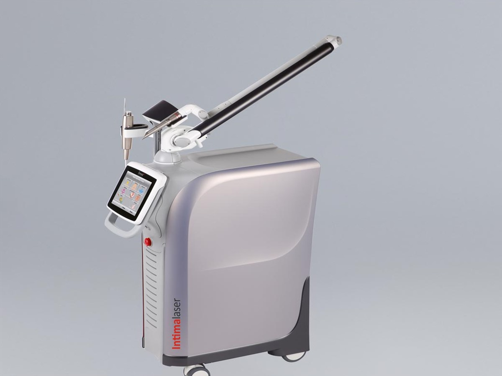

Colegio de Médicos y Cirujanos de Costa Rica.
Medicina íntima femenina
Ginecología láser con criterio clínico, tecnología y acompañamiento. Ginecología láser con criterio clínico.
Atención especializada para mujeres que buscan orientación seria, agenda clara y valoración médica con el Dr. Luis Diego Carazo.
Perfil médico
Dr. Luis Diego Carazo
Una práctica ginecológica sobria, precisa y centrada en la paciente.
El sitio separa la atención médica de los servicios estéticos para que cada paciente encuentre información confiable sobre consulta ginecológica, IncontiLase, labioplastia, hormonas bioidénticas, displasia de cérvix y medicina regenerativa ginecológica.
Filosofía de atención
Orientar con claridad, valorar con criterio y acompañar cada decisión clínica con responsabilidad.
Ver servicios médicosOrientación
¿Qué información estás buscando?
Esta guía ayuda a encontrar contenido relacionado. No constituye diagnóstico ni reemplaza una valoración médica.
01
IncontiLase FOTONA
Información para mujeres con pérdidas de orina al toser, reír o hacer ejercicio.
Tratamientos
Tratamientos ginecológicos disponibles para valoración médica.
Tratamiento destacado
IncontiLase para incontinencia urinaria de esfuerzo
Una alternativa médica no quirúrgica descrita para pacientes seleccionadas. La indicación se confirma en consulta.
Ver detalle
Proceso
Un recorrido claro desde la duda hasta la cita.
- 01Explora
Lee información sobre servicios ginecológicos.
- 02Pregunta
Usa Sofi para orientarte o revisar una cita por cédula.
- 03Agenda
Selecciona un espacio en el calendario oficial de citas.
- 04Valora
El doctor confirma indicación y plan durante la consulta.
Agenda oficial
Da el siguiente paso con una valoración ginecológica.
Sofi puede orientarte para agendar, revisar una cita por cédula o resolver preguntas básicas sobre tratamientos ginecológicos disponibles.